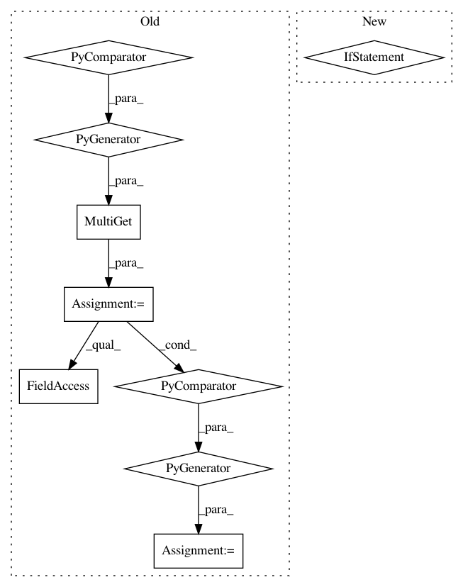

52c7c260e7c0a85e6b051af48b46e8fe9493b117,src/python/pants/core/util_rules/determine_source_files.py,,determine_specified_source_files,#Any#,132
Before Change
all_snapshots: Iterable[Snapshot] = (*full_snapshots.values(), *snapshot_subsets)
if request.strip_source_roots:
all_sources_fields = (*full_snapshots.keys(), *digest_subset_requests.keys())
stripped_snapshots = await MultiGet(
Get(
SourceRootStrippedSources,
StripSourcesFieldRequest(
sources_field,
specified_files_snapshot=snapshot,
for_sources_types=request.for_sources_types,
enable_codegen=request.enable_codegen,
),
)
for sources_field, snapshot in zip(all_sources_fields, all_snapshots)
)
all_snapshots = (stripped_snapshot.snapshot for stripped_snapshot in stripped_snapshots)
result = await Get(Snapshot, MergeDigests(snapshot.digest for snapshot in all_snapshots))
return SourceFiles(result)
After Change
all_hydrated_sources, request.sources_fields_with_origins
):
sources_field, origin = sources_field_with_origin
if isinstance(sources_field, FilesSources):
all_unrooted_files.update(hydrated_sources.snapshot.files)
if not hydrated_sources.snapshot.files:
continue
specified_sources = calculate_specified_sources(
hydrated_sources.snapshot, sources_field.address, origin
In pattern: SUPERPATTERN
Frequency: 3
Non-data size: 9
Instances
Project Name: pantsbuild/pants
Commit Name: 52c7c260e7c0a85e6b051af48b46e8fe9493b117
Time: 2020-08-04
Author: benjyw@gmail.com
File Name: src/python/pants/core/util_rules/determine_source_files.py
Class Name:
Method Name: determine_specified_source_files
Project Name: pantsbuild/pants
Commit Name: 95a2e14c7613e4603a629dbc1c26799b40412391
Time: 2020-02-26
Author: ericarellano@me.com
File Name: src/python/pants/backend/python/rules/prepare_chrooted_python_sources.py
Class Name:
Method Name: prepare_chrooted_python_sources
Project Name: pantsbuild/pants
Commit Name: 52c7c260e7c0a85e6b051af48b46e8fe9493b117
Time: 2020-08-04
Author: benjyw@gmail.com
File Name: src/python/pants/core/util_rules/determine_source_files.py
Class Name:
Method Name: determine_all_source_files